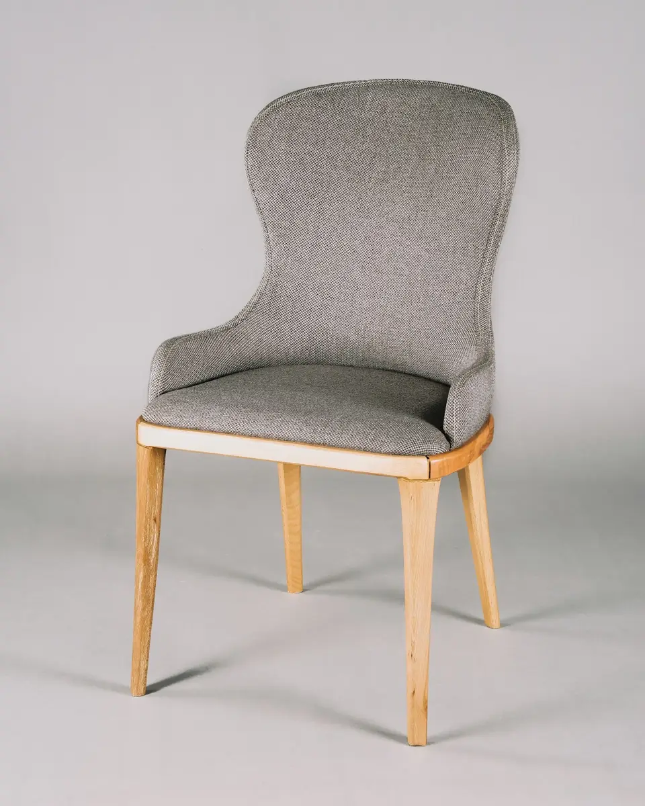

Made to order / Seating
The reading chair
A comfortable corner, shaped around your space.
Furniture with considered proportions and honest materials. Explore a piece, discuss your space and make it your own.
Pieces with a place in your home ↓


Illustrative projects and visual references. Explore the idea behind each direction.
A comfortable corner, shaped around your space.
Solid proportions for everyday meals and company.

Storage that works with the room, not against it.
Fictional demo: images are illustrative stock references. Any prices, schedules and listings shown are examples, not live offers.
Compare natural timber, a painted finish and upholstered details. Dimensions and finishes are signed off before making.
Yes, start with measurements and photographs; final dimensions are confirmed before production.
Compare natural timber, a painted finish and upholstered details. Dimensions and finishes are signed off before making.
This is a fictional design demo. The form previews the enquiry flow and does not send or store your details. Use the link to Ruhaan to discuss making this design your own.
Compare natural timber, a painted finish and upholstered details. Dimensions and finishes are signed off before making.
Try this form with sample details. It previews an enquiry only—nothing is sent, stored or booked.
Ask Ruhaan for this website ↗